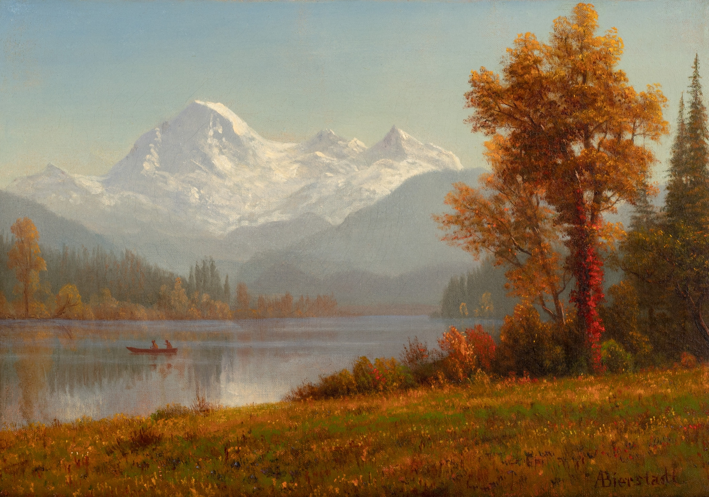

art
This will be the place where I'll talk about some works of art that I like. I'm not really a versed person in anything related to painting but I'll just share what catches my attention.

This one has always struck a chord in me. Out of the many great works that Beksinski made throughout his life, I would say this is a special one—one that truly portrays the dreamlike commotion he wanted his onlookers to feel. The oneiric presence is constant; when you look at this painting, you inevitably feel very small. It’s as if you are trapped in a dimension or reality where you don’t belong, and that is what makes it so striking. It almost evokes the kind of fear that cosmic horror provokes

It's very peculiar that this image always makes me think about myself, there is a very specific gesture I make — one I have never really seen in anyone else, whenever I feel overwhelmed or close to a breakdown, every single time I place my palms against my forehead and begin rubbing my head intensely with my fingers, I don't know exactly why I do it, but that feels as if I was protecting myself from something while I sob

This is one of the latest additions to my wallpapers folder I have always thought that I was not particularly fond of landscapes, not as wallpapers and not even as paintings in general. Most of them always felt distant to me, I perceived them merely as decorative in a way that made them feel inconsequential or simply unappealing, yet lately I have been finding myself drawn to images like this one, probably because I have been trapped in the Kaczynski rabbit hole for quite a long time now, and I constantly daydream about being completely off the grid, somewhere where no one is watching me, and I think that is why these paintings have become more and more captivating to me as time passes This painting by Albert Bierstadt fits my current setup almost perfectly. The warm tones spreading across the mountains give the entire scene a very quiet feeling, one that feels distant and intimate at the same time. Something that I really like are the cracks in the paint itself. There is something about them that makes the landscape feel aged, almost in the same way I imagine life would feel if I were to live away from society. I reckon that in that scenario I might lose my mind during the first weeks, yet in many ways I truly believe that is how life is meant to be lived because I do not think that we are designed to exist within this consoomer reality in which, pitifully, we are subjected to things that make us suffer so significantly. This society is built upon the praise of money and the desire to dominate one another